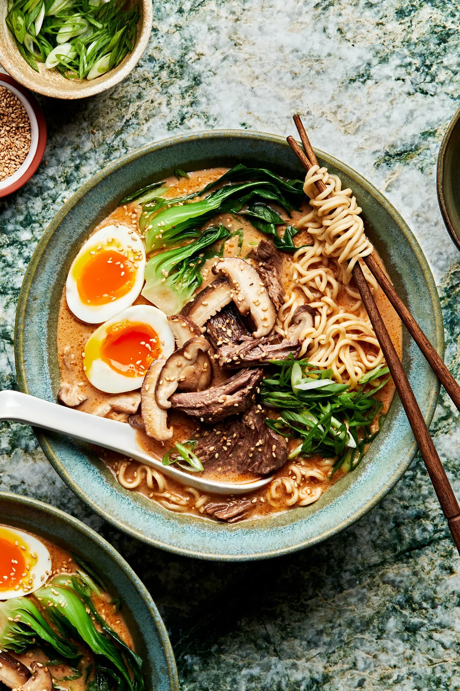

Ramen

Description
My quick and delicious Miso Ramen recipe with an intensely savory broth is ready in less than 30 minutes. With 5 key soup broth ingredients, this piping-hot bowl of soulful goodness is sure to satisfy your ramen cravings!
Ingredients
- Miso
- Doubanjiang
- Sesame seeds and sesame oil
- Noodles
- Homemade or store-bought chicken broth
Steps
- Prepare the ramen toppings
- Gather all the ingredients
- Make the soup broth
- Prepare the ramen noodles
- Assemble the lasagna
Home